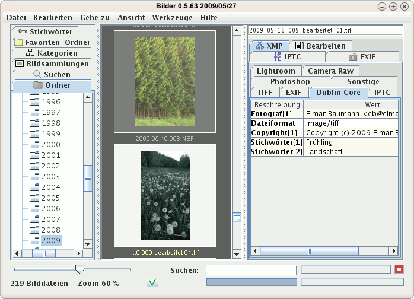
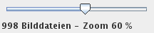
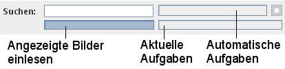
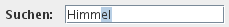
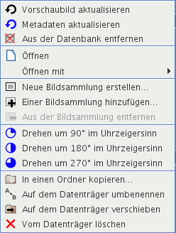
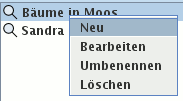

Das Programmfenster ist aufgeteilt in vier Bereiche:

Alle Befehle gelten für eine Auswahl, werden nur auf diese angewendet. Die Vorschaubilder in der Mitte können Sie mit der Maus auswählen:
Strg-Taste (Steuerung) auf ein nicht ausgewähltes Bild fügt dieses einer Auswahl hinzuStrg-Taste (Steuerung) auf ein ausgewähltes Bild entfernt dieses von einer AuswahlUmschalt-Taste (Shift) wählt die geklickten aus und alle Bilder dazwischenStrg+A alle Bilder ausMit dem Regler unten links können Sie die Größe der Vorschaubilder einstellen zwischen 10 % und 100 % der eingelesenen Größe in Schritten von 10 %. Gute Qualität erzielen Sie, wenn Sie die Vorschaubilder groß einlesen lassen und für mehr Übersicht verkleinern.

Die Fortschrittsanzeigen verdeutlichen, wie weit bestimmte Aufgaben erledigt sind. Die rechte obere zeigt den Fortschritt automatisierter Aufgaben an, die darunter, was Sie veranlassten und die linke, wie weit die Vorschaubilder in der Fenstermitte in die Datenbank eingelesen wurden.

Sie können in das Eingabefeld am unteren Fensterrand einen Suchtext eingeben. Nachdem Sie die Enter-Taste (Return) gedrückt haben, wird nach dem Text gesucht, den Sie eingegeben haben. Tipp: Mit der Tastenkombination Strg+F springen Sie schnell in das Suchen-Eingabefeld.

Die grüne Schaltfläche links von Suchen öffnet die Protokolldatei. Dies kann wichtig sein, wenn sie ein rotes Kreuz anzeigt: Dann verlief etwas, wie es nicht sollte.
Klicken Sie mit der rechten Maustaste, klappen manchmal Kontextmenüs auf neben dem Mauszeiger und zeigen Optionen, die für den Bereich gelten, über dem die Maus steht. Bedingungen:
Sie wählen zuerst mit der linken Maustaste etwas aus und klicken dann die rechte. Unten sind zwei Kontextmenüs abgebildet.
